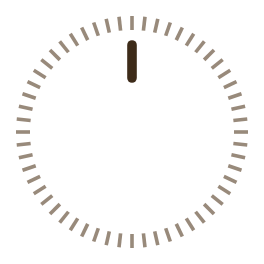

앱 화면을 그대로 본뜬 시뮬레이션입니다. 노브를 돌려 방송을 찾는 느낌을 볼 수 있지만, 방송 소리는 나오지 않습니다. 실제 방송은 안드로이드 앱에서 들을 수 있어요 — 설치 방법

앱의 설정 › 화면에서 고르는 세 가지 테마입니다. 나라 · 언어 · 청취 모드 같은 다른 설정은 앱에서 바꿀 수 있어요.
서울·경기·인천의 FM 27개 · AM 5개 방송 위치는 앱의 방송표와 같습니다. 프로그램 · 곡 정보, 녹음, 예약, 다른 나라 다이얼은 앱에서만 됩니다.
글꼴: Playfair Display (SIL OFL) · 아이콘: Ionicons (MIT)